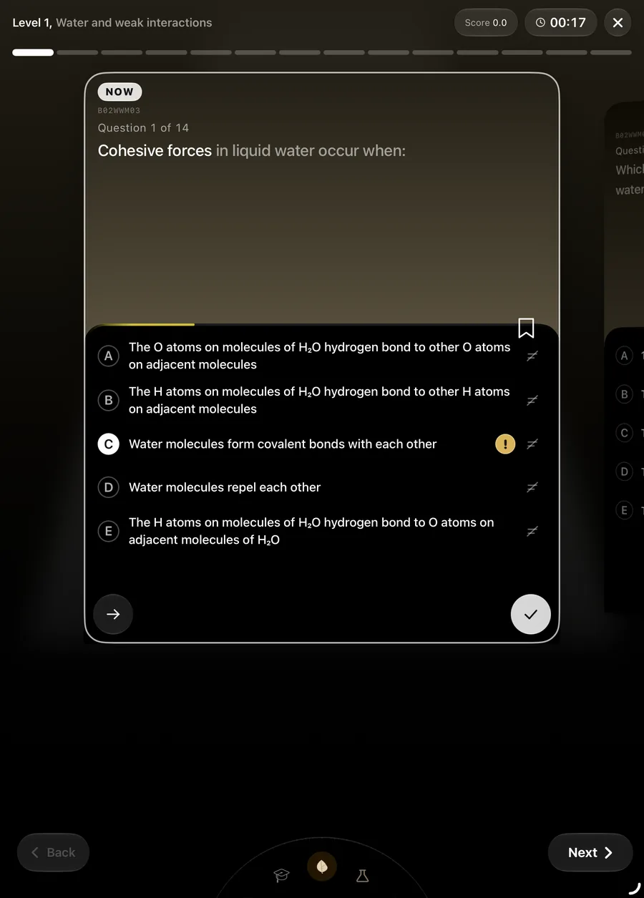

Biology
Available- Units
- 7
- Questions
- 728
- Traps
- 714
Mock: 23 questions · 39 minutes
How it works
IMAT6 scores you like the exam, shuffles so you learn answers rather than letters, times every choice, listens when you're unsure, and keeps bringing back what you got wrong. Here's how each piece works.
Anatomy of a question
Scroll, and each part lights up. Or use the card yourself: tap to pick, hold an option to mark it unsure, tap ≠ to cross it out.
Every checked answer moves your score by the IMAT's own marks: +1.5 right, −0.4 wrong, 0 left blank. Practice and the real thing feel the same.
Each question keeps its own time. The thin line above the options grows as the seconds pass, so you feel the pace of the real paper without a countdown shouting at you.
Tapping an option only selects it. Nothing counts until you check, so you can change your mind like you would on paper.
A long press marks your pick with a gold !. It still counts the same, but IMAT6 remembers you weren't sure, and later shows how often your hunches are right.
Tap ≠ to strike an option. Ruling options out is how a guess becomes worth taking under negative marking.
The ribbon saves the question to Marked questions, sorted by subject and sub-topic, ready to practise again.
The arrow leaves it blank, exactly as you would on the day, and the next question slides in.
The card turns green or red, the score moves, and every option explains itself: why yours was wrong and why the right one is right.
Scoring
The IMAT rewards knowing and punishes guessing. In levels, only the answers you check are scored. In checkpoints and mocks every pick counts, like the exam.
Your paper of 60
Left blank: 10
out of 90
Pick how many options are still standing after you've crossed some out.
−0.020 marks per guess
Shuffling
Every attempt shuffles the order of the questions and the order of their options. You can't remember that the answer was “E”, so you have to remember why. Behind the scenes, each shuffled pick is mapped back to the original question, so your history stays exact.
Carbohydrates and lipids · level 3
Time
Time is saved with every answer. The questions you got wrong, and the ones you got right too slowly, come back in your mocks again and again until they're quick and certain.
Move the slider to decide what slow means, then build the next mock.
Difficulty
In a mock, a right answer in under two seconds tells IMAT6 the question was too easy for you. It reshuffles what's left of the mock toward harder questions on the same topics, so a fast streak never coasts.
Answer a few below and watch the next questions change.
Difficulty Level 2
Up next in this mock
Confidence
Long-press any option and a gold ! sits beside it. Your answer counts the same, but now IMAT6 knows the difference between what you know and what you guessed.
Sample: one student's last 300 answers.

Your plan
Six short cards on first launch. Your session, goals, daily hours and subject ranking decide what you see first and how much lands on each day. Try it, then watch your first week rebuild below.
Your first week, built from the cards above. Physics, Maths & Logic and Reading join the plan as they arrive.
Mistakes
A level you fail turns red on the path. Its theory opens first, and the redo unlocks once you've read it. Almost every question also hides an IMAT trap on the same idea, and anything you bookmark waits in Marked questions.
Reports
Close a topic and you see your score under real marking, right, wrong and skipped, your time per question and the slowest ones. Close a subject and every unit shows its three rings: questions right, accuracy, and levels passed.
Sample figures for a student partway through Biology.
Wins
Pass a checkpoint, collect a trophy, or close a unit's ring, and IMAT6 stops to celebrate.
Chemistry of life · Unit 01
Built differently
Most IMAT apps are a list of questions with a percentage at the end. IMAT6 is built around how you answer them.
By the numbers
Mock: 23 questions · 39 minutes
Mock: 15 questions · 25 minutes
Mock: 13 questions · 22 minutes
Mock: 5 questions · 9 minutes
Mock: 4 questions · 7 minutes
Each mock takes its share of the real paper's 60 questions and 100 minutes. Based on the most recent published IMAT format.